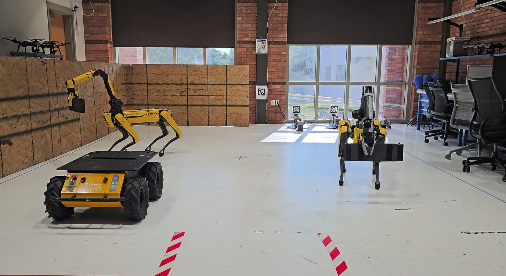

Collaborative autonomy
Multi-agent robotics at IHMC
Developed an end-to-end distributed autonomy platform for heterogeneous robot teams, combining a Rust autonomy core and Python interfaces with Joint Activity Graphs, capability-based task allocation, and Zenoh communications. Versioned, hardware-agnostic interfaces and modular robot adapters separate team decisions from platform execution.
Built physics-based simulation and hybrid digital twins with Bevy/Avian, connecting motion capture, command validation, runtime supervision, and observability across simulation and hardware. Coordinated object collection and delivery was demonstrated in more than ten trials with two autonomous Boston Dynamics Spot robots and a human-operated Clearpath Husky. Staged Spot grasping combined motion-capture-guided positioning with arm-camera refinement.
About IHMC Robotics NCCA summer internship wrap-up